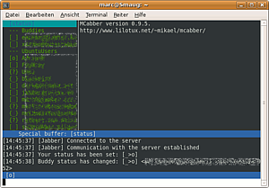

MCabber
Dieser Artikel wurde für die folgenden Ubuntu-Versionen getestet:
Ubuntu 14.04 Trusty Tahr
Zum Verständnis dieses Artikels sind folgende Seiten hilfreich:
 MCabber
MCabber  ist ein XMPP-Client für die Kommandozeile bzw. Konsole. Es wurde, von Mikael Berthe, in C erstellt und nutzt die freie Programmbibliothek ncurses. Es steht unter der GPL-Lizenz .
ist ein XMPP-Client für die Kommandozeile bzw. Konsole. Es wurde, von Mikael Berthe, in C erstellt und nutzt die freie Programmbibliothek ncurses. Es steht unter der GPL-Lizenz .
Da MCabber wenig Ressourcen benötigt und ohne XServer auskommt, ist es sehr gut für ältere Computer geeignet.
Das Programm bietet unter anderem:
Nachrichten-Verschlüsselung
SSL Unterstützung,
Mitschnitt des Gesprächsverlaufs
GNU Aspell-Unterstützung

Installation¶
Folgende Pakete müssen installiert [1] werden:
mcabber (universe [2] )
 mit apturl
mit apturl
Paketliste zum Kopieren:
sudo apt-get install mcabber
sudo aptitude install mcabber
Das Programm wird im Terminal [3] mit folgendem Befehl gestartet:
mcabber
Konfiguration¶
Vor dem ersten Starten sollten im Homeverzeichnis Konfigurationsordner für MCabber angelegt werden:
mkdir ~/.mcabber ~/.mcabber/logs ~/.mcabber/otr chmod 0700 -R ~/.mcabber
Hinweis:
Die Verzeichnisse ~/.mcabber/logs und ~/.mcabber/otr müssen nur bei der Verwendung der entsprechenden Optionen erstellt werden.
MCabber benötigt für eine Standardkonfiguration nur wenige Optionen; diese werden in der Konfigurationsdatei ~/.mcabber/mcabberrc gespeichert, die mit einem Editor [4] angelegt werden muss. Es reicht, wenn lediglich die Daten für set server und set username hinterlegt sind. Sofern kein Passwort angegeben wurde, wird dies bei jedem Start von MCabber abgefragt.
Ein Beispiel für eine Grundkonfiguration ist:
# Basisdaten set server = ServerName set username = Benutzername set jid = XMPP-Identität (JID) # Passwort hinterlegen set password = GEHEIM # Sprache auf Deutsch setzen set lang = de # Bei Verwendung mehrerer Clients angeben. set resource = ubuntuusers # Reihenfolge der Clients. set priority = 1 # Verschlüsselte Serververbindung set ssl = 1 # mcabber Version < 0.10 set ssl_verify 0 # mcabber Version >= 0.10 set ssl_ignore_checks = 1
Als Referenz kann man die Beispieldateien mcabberrc.example oder mcabberrc.example  nutzen. Diese zeigen viele weitere Einstellungsmöglichkeiten auf.
nutzen. Diese zeigen viele weitere Einstellungsmöglichkeiten auf.
Hinweis:
Um eine Option zu aktivieren, muss die Raute (#) am Zeilenanfang entfernt werden.
Gesprächsmitschnitt¶
Um den Gesprächsmitschnitt zu aktivieren, müssen die folgenden Zeilen ergänzt werden:
set logging = 1 set logging_dir = ~/.mcabber/logs/ set log_muc_conf =
MUC¶
Verwendet man Multiuser-Chat, so kann man seinen Nick hinterlegen und Informationen über einen Benutzer erhalten, der diesen Kanal betritt:
set nickname = Nickname set muc_auto_whois = 1
Status¶
Um Statusmeldungen im Vorfeld zu definieren, können diese in der Konfigurationsdatei entsprechend bearbeitet werden. Beispiele:
set message = Unique message status set message_avail = I'm available set message_free = I'm free for chat set message_dnd = Please do not disturb set message_notavail = I'm not available set message_away = I'm away
Tastenkombinationen¶
Um Befehle einer bestimmten Tastenkombination zuzuweisen, verwendet man den Befehl bind. Die Zuweisung kann in der Konfigurationsdatei hinterlegt werden. Sofern das Programm eine Taste nicht kennt, wird im Log-Fenster der entsprechende Zahlencode angezeigt. Für
F2 lautet der Code z.B. 266. Die Befehle werden in der Datei nach dem Muster bind Zahlencode Befehl hinterlegt. Der Befehl /quit wird in diesem Beispiel der Taste
F2 zugeordnet:
bind 266 = quit
Hinweis:
Bei Eingabe des Befehls ist darauf zu achten, dass der Schrägstrich („/“) weggelassen wird.
Verschlüsselung¶
GnuPG¶
Um die Verschlüsselung via GnuPG zu verwenden, sollte in der Konfigurationsdatei folgende Zeilen ergänzt werden:
set pgp = 1 set pgp_private_key = "C9940A9BB0B92210"
Der private Schlüssel, also z.B. "C9940A9BB0B92210", ist hier zu hinterlegen.
OTR¶
MCabber generiert beim Start einen Schlüssel für OTR. Um dies zu aktivieren, in der Datei folgendes ergänzen und MCabber neu starten:
set otr = 1 set otr_dir = "~/.mcabber/otr/"
Beim nächsten Start erhält man folgende Meldungen im LogFenster.
Could not read OTR key from /home/marc/.mcabber/otr/xyz@noname.de.key Generating new OTR key for xyz@noname.de. This may take a while... OTR key generated.
Die Verschlüsselung ist nun aktiv. Im Ordner ~/.mcabber/otr findet man nun eine Datei mit dem Schlüssel, z.B. xyz@noname.de.key. Um OTR bei jedem Start automatisch zu starten, muss im Befehlsfenster lediglich die empfohlene Einstellung /otrpolicy default opportunistic eingeben werden. Neben dieser Einstellung steht noch "always", "plain" und "manual" zur Verfügung. Detailliertere Informationen stehen in der Hilfe.
Bedienung¶
Die Oberfläche des Programms ist unterteilt in Kontaktliste (Roster), Chatfenster (Anzeige aktueller Nachrichten), LogFenster (Anzeige aktueller Meldungen) und die Eingabezeile, mit der das Programm gesteuert wird. Neu empfangene Nachrichten eines Kontaktes werden farblich hervorgehoben und mit einer Raute # hervorgehoben.
Befehle¶
Es folgt eine kleine Auswahl nützlicher Befehle. Möchte man mehr über einzelne Befehle erfahren, gibt man in der Eingabezeile z.B. /help room ein.
| Grundbefehle | |
| Befehl | Beschreibung |
/help | Hilfe |
/roster up | Navigation in der Kontaktliste |
/roster down | Navigation in der Kontaktliste |
/roster show_offline | Offline-Kontakte einblenden |
/buffer up X | Text X Zeilen nach oben scrollen |
/buffer down X | Text X Zeilen nach unten scrollen |
/status | Aktuellen Status anzeigen bzw. eigenen Status setzen: online, avail, invisible, free, dnd, notavail und away. Dies kann auch in der Konfigurationsdatei hinterlegt werden. |
/status Status Text | Status setzen gefolgt von einem Text. - als Text löscht die aktuelle Mitteilung. Der Statustext kann auch in der Konfigurationsdatei hinterlegt werden. |
/add jemand@jabber.server.com Jemand | Kontakt hinzufügen |
/pgp enable | GnuPG für den Kontakt aktivieren |
/pgp disable | GnuPG für den Kontakt deaktivieren |
/pgp setkey | Schlüssel-ID dem Kontakt zuweisen |
/room | Multiuser-Chat |
/room names | Chatteilnehmerliste |
/quit | Programm beenden |
In den Manpages sind weitere Befehle zu finden.
Tipps¶
Abwesenheit¶
Um die automatische Abwesenheitsanzeige zu aktivieren, kann in der Datei ~/.mcabber/mcabberrc eine Zeit X in Sekunden hinterlegt werden; zudem kann wahlweise unter message_autoaway ein Text hinterlegt werden:
set autoaway = X set message_autoaway = Auto-away (idle)
Aliases¶
„Aliase“ dienen dazu, einen (längeren) Befehl durch eine kurzen (und einprägsamere) Zeichenfolge zu ersetzen. In der Konfigurationsdatei kann ein Alias nach folgendem Muster erstellt werden:
alias binweg = status away
Im Programm wird das Alias mit /binweg aufgerufen und so der verknüpfte Befehl umgesetzt.
Aspell¶
Um die Rechtschreibprüfung unter MCabber zu aktivieren, müssen folgende Zeilen in die Konfigurationsdatei eingefügt werden:
set aspell_enable= "1" set aspell_lang= "de" set aspell_encoding= "UTF-8"
Tastenkürzel¶
| MCabber | |
| Taste(n) | Funktion |
| Tab ⇆ | Autovervollständigung |
| F5 | Offline-Kontakte ein/ausblenden |
| Strg + P | Im Chatlog des aktuellen Benutzers zurück scrollen |
| Strg + Q | Zur nächsten ungelesenen Nachricht springen und diese anzeigen |
| Bild ↑ / Bild ↓ | Navigation in der Kontaktliste |

- Erstellt mit Inyoka
-
 2004 – 2017 ubuntuusers.de • Einige Rechte vorbehalten
2004 – 2017 ubuntuusers.de • Einige Rechte vorbehalten
Lizenz • Kontakt • Datenschutz • Impressum • Serverstatus -
Serverhousing gespendet von